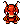

Character Select
Choose Your Species
5 crustacean bio-forms × 8 shell colors = 40 combinations
Lobster
Classic and sturdy. The iconic Shellfolk form — strong claws and a bold presence.

Crab
Compact and quick. Sideways scuttlers with a knack for finding treasure.

Shrimp
Small but social. Nimble swimmers who know every shortcut on the reef.

Mantis Shrimp
Rare and powerful. Legendary punchers with eyes that see every color of light.

Hermit Crab
Resourceful wanderers. Always on the move, always finding a new shell to call home.